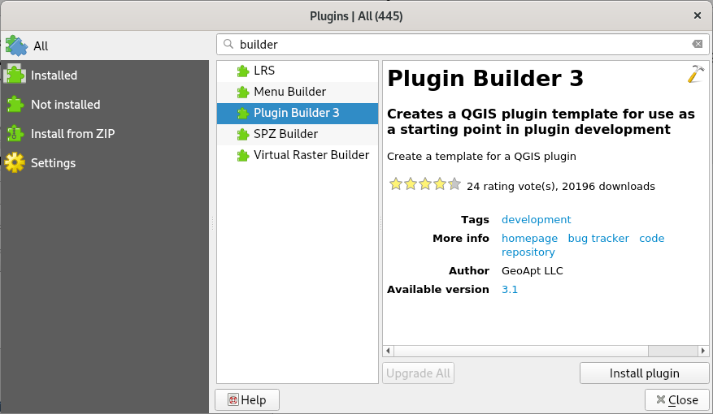

Setup QGIS
Two helper plugins need to be installed:
Go to
and enable Show also experimental plugins in Settings tab
Search for Plugin Builder 3 and install the plugin
Search for Plugin Reloader and install the plugin

Fig. 4 Install Plugin Builder 3.